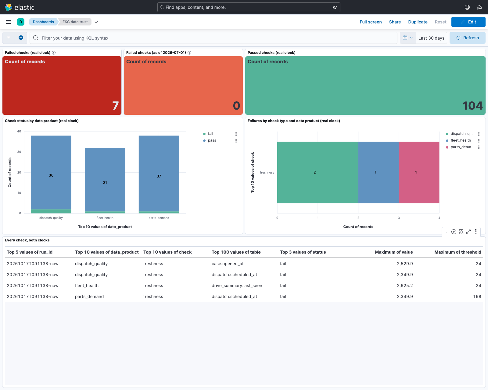

A governed knowledge graph over one small enterprise, built so that an agent gets trusted, provenance-backed context instead of raw tables.
scripts/build_site.py reads reports/ and docs/LINEAGE.md and writes the JSON the charts draw from. Neo4j, Elasticsearch, Kibana and the context API do not run on Vercel. From a clone, make up load resolve lineage gds eval trust rebuilds everything, and make eval reruns the text-to-Cypher sets from the committed cache with zero model calls.reports/load_counts.json (log scale: the graph holds 359,101 drives and 8 suppliers)
reports/lineage_counts.json
reports/resolution_metrics.json, accounts
reports/resolution_metrics.json, assets
Pairs that scored in the grey band. The company names are generated by the seeded enterprise; nobody real is in this list.
reports/uncertain_matches.csv
Same three arms, same seeds.
reports/gds_lift.json
reports/gds_summary.json, communities (same site, failures within the window)
Two question sets with gold Cypher and frozen result hashes. A question counts as correct when the generated query runs and returns the gold result. Responses are cached on disk and committed, so the evaluation reruns with zero model calls.
reports/nl2cypher_eval_summary.json, reports/nl2cypher_hard_eval_summary.json
reports/nl2cypher_hard_eval.csv. "ran, wrong" means the database raised no error and returned a plausible wrong row, which the loop cannot see.
reports/nl2cypher_eval.csv
reports/trust_results_now.json, reports/trust_results_asof.json

One worked example from docs/LINEAGE.md: the column path and the job path behind a site's expected 30-day failures in the fleet-risk report, printed by the lineage tool over the metadata graph.
docs/LINEAGE.md. The graph holds 590 column-level and 306 table-level DERIVED_FROM edges; the doc lists what column lineage cannot say (in-memory frames, inside the model, non-tabular outputs, expressions as declared text).